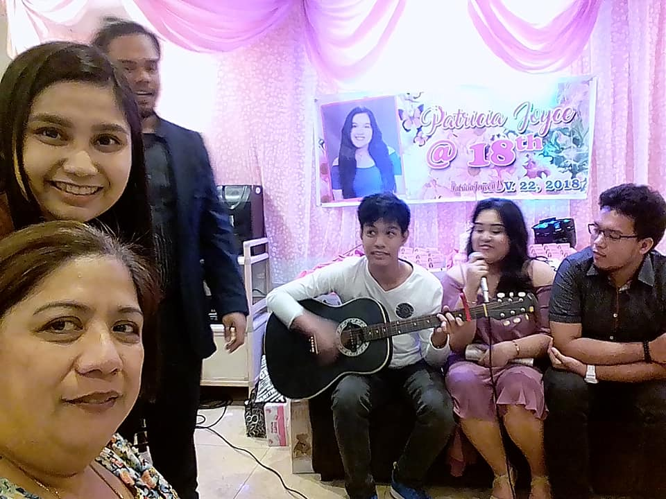

SKILLS
Skills are something a person have whenever he is really good at something or knowledgeable on executing something effectively. Skills are something that a person develop for a certain amount of time and will require a lot of practice and consistency. My skills in particular are highly influenced from my cousins, interests and my goal profession. One skill that I have and genuinely like is video editing. When it comes to video editing, I am not the most proficient but I am knowledgeable about the basics. Video editing provides me freedom and creativity in edits. It also has some artistic aspect in taking advantage of transitions. I can say that editing is a very broad skill and every detail is an important aspect of the output. With that the next skill that I have is basic photo editing which is similar with video editing. Unlike video editing photo editing is much simple because there is only one frame that is needed to be edited. The best photo editing tool is photoshop which requires a lot of familiarity of the software. Another skill that I have is playing the guitar which is also a part of my hobbies and interest. Learning to play guitar is also a hard skill to develop because it is same as learning a new language and speaking it. Guitar playing is a skill that I want to continuously develop however it is a very time consuming and complex skill to learn. Next skill is programming, it is a skill that is in its early stage of development. It is a skill that I think will continue on developing and advancing because most programming language keeps on changing as new versions gets released. Programming is the same with studying the guitar, they are both same as learning a brand-new language and applying it. When it comes to programming, I am still trying to learn and continue developing it. Programming is a skill that is very important skill to have for my course and future profession. Most of these skills of mine are still developing and I wish that I learn new skills while also improve the once I currently have.
HOBBIES
Hobbies are something I like to do in my own spare time and some of them help shape my skills and interest. First of which is what is common to most teenagers in this generation which is browsing social media. Most of my free time is used on my phone scrolling Facebook, Instagram twitter and YouTube. Scrolling through social media can have various benefits and disadvantages. One of the benefits can include gaining new knowledge about the world which can be through news, updates from friends and shared articles. Another benefit is it can provide entertainment to users through a form of videos, photos, and memes. However, social media can also have disadvantages such as toxicity, fake news, and can lead to accuracy. Another one of my hobbies is one of my skills which is playing the guitar. Playing the guitar is a hobby that I put less time to because it can use up a lot of time when learning new songs and practicing. However, I wish that guitar playing is one of the hobbies that I am really good at because it can provide a lot of opportunity such as composition and freestyle playing. I also like listening to music whenever I do my assignments, chores and free time. Music can provide both entertainment and comfort to a person which is why we always listen to it. Another hobby that I have is something that is slowly becoming more mainstream which is gaming. Gaming is a common activity to teenagers where we can become a lot competitive than others. What fun about gaming is that, we get to compete with other people while also having fun. In the world of gaming, I can find new people with the same interest which can lead to finding friends from all over the world. Lastly, another hobby that I have is watching movies and series. Movies and series provide the best entertainment of all of my hobbies because they can provide unique kinds of stories. They also provide good conversation to friends and family members when talking about their favorite movies and series. These are hobbies that provide me entertainment and something to do during my free time which is a good distraction from reality and enjoying life.


INTERESTS
Interests are things and activities that I like to know about and learn more about. My interests are composed of thing that I already know and would like to know more. Some of them are from my skills and hobbies but most of them is something that I haven’t experienced yet. Skill and hobbies that interests me are programming, gaming, watching movies and series and scrolling social media. Most of these are something that I will never lose interest because it is important for my future career like programming. Another thing that interests me is traveling around the world. However, it is something that can cost a lot of money and takes a lot of time. Traveling interest, me because I will be able to look at new places abroad and differentiate it from here in the Philippines. Another thing is I will be able to meet different types of people with different culture and practices. Next thing that interests me is having a collection of collectibles like shoes, clothing rare toys and in game items. Collecting is something that only interest me but I don’t currently do because it is expensive and it is hard to buy and sell collections here in the Philippines. Collecting can be both a waste of money or a good investment. However, I think collecting is cool especially when you get rare stuff that are limited edition and a lot of people are wanting to get it. You can make a lot of money from collecting because some people are willing to buy collections specifically complete ones. Another interest that I have is producing something in the creative field. I am willing to learn anything when it comes to producing something it can be from creating music, editing videos, editing photos and making digital arts. However, these are skills that’s going to take a lot of time to learn and master. It also takes a lot of focus and dedication which can cost your main profession. Producing is another way of opening up opportunities to creative sectors and represent around the world. Interests is something that can help motivate me to work for something in life.